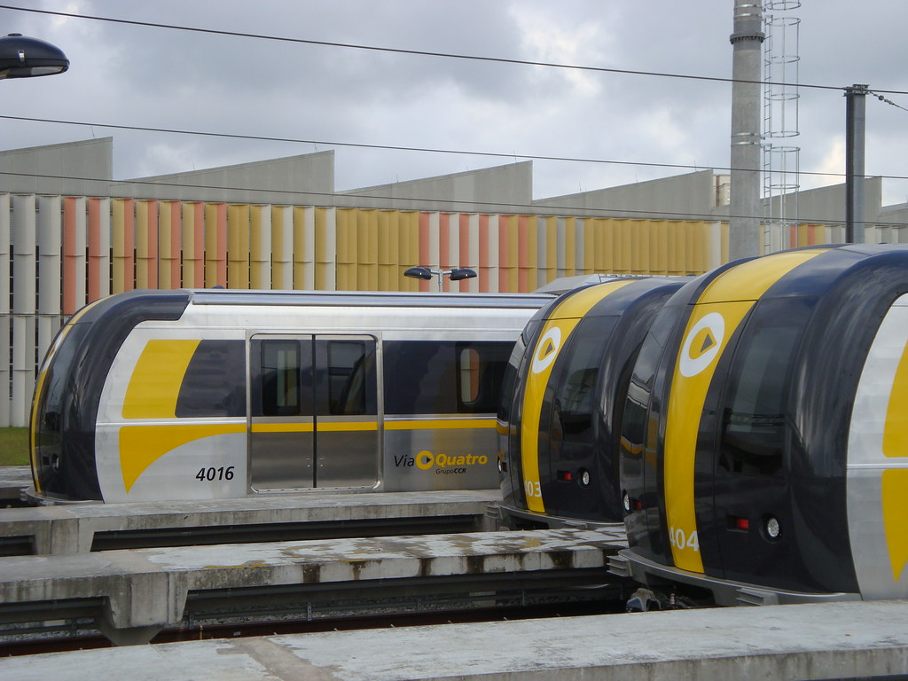

Toda pessoa merece encontrar seu caminho.
O Meu Tempo nasceu da escuta sensível de uma cidade agitada e de uma pergunta simples: como fazer a tecnologia respeitar o ritmo de cada pessoa?

Autonomia não deveria depender de sorte.
A inspiração para o Meu Tempo surgiu dentro do metrô de São Paulo, ao observar o SIIM — o sinal musical da Linha 4-Amarela que acolhe e orienta passageiros no momento de embarcar e desembarcar.
Em uma metrópole tão acelerada quanto São Paulo, atravessar uma avenida ou circular por uma grande estação pode exigir muito mais do que disposição. Para pessoas idosas, pessoas com deficiência (PCDs) ou com mobilidade reduzida, um semáforo rápido demais ou a dificuldade de encontrar ajuda interrompem o direito básico de ir e vir.
O Meu Tempo nasce como uma proposta de tecnologia cidadã desenvolvida na FIAP para transformar o celular ou smartwatch em um guia pessoal de autonomia, cuidado e segurança.
O que torna uma cidade realmente inteligente?
No universo da CitizenTech, falamos muito sobre cidades inteligentes. Mas uma cidade deixa de ser inteligente quando cria uma tecnologia voltada à acessibilidade e não consegue fazê-la chegar a quem precisa.
São Paulo conta com semáforos sonoros que emitem um bipe quando o pedestre aperta o botão. Na prática, porém, eles existem em pouquíssimos cruzamentos — e muitos acabam desativados por conta da poluição sonora das ruas.
O mesmo cuidado acompanha o trajeto no transporte sobre trilhos. As estações do Metrô e da CPTM possuem agentes preparados para ajudar, mas eles ficam distribuídos em pontos distantes de plataformas extensas. Com o Meu Tempo, o cidadão envia um chamado com sua localização exata na estação, permitindo que o agente vá diretamente ao seu encontro.
IARA: a voz que guia pelo caminho
No centro da experiência está a IARA — Inteligência de Apoio à Rotina Acessível. Além do significado técnico da sigla, o nome carrega uma homenagem ao folclore brasileiro, em que a Iara encanta e conduz as pessoas por meio da sua voz.
Trouxemos essa simbologia para a tecnologia com um propósito claro: permitir que pessoas cegas, pessoas idosas com dificuldade de digitação ou qualquer cidadão em movimento naveguem por todo o aplicativo usando apenas comandos de voz — mantendo também a opção por texto e botões para quem preferir.
“Sua voz é o caminho. Sua autonomia é o destino.”
O que queremos transformar
- Garantir navegação completa por voz com a IARA, eliminando barreiras para pessoas cegas e idosas.
- Substituir o problema da poluição sonora por guias musicais, táteis e tempo estendido de travessia direto no celular.
- Conectar passageiros nas estações de Metrô e CPTM aos agentes operacionais por meio de chamados geolocalizados.
- Apoiar o poder público com relatos de zeladoria urbana e indicadores inteligentes para expandir a acessibilidade na cidade.
Construído a partir das pessoas
Acreditamos que acessibilidade não é um recurso adicional — é o ponto de partida. Cada tela, contraste, aviso sonoro e fluxo do Meu Tempo foi pensado para que ninguém precise enfrentar a cidade sozinho, porque é a cidade que deve aprender a caminhar no tempo de cada pessoa.
Seu caminho merece respeito. Seu tempo também.
Encontre novas formas de se mover pela cidade, do seu jeito.